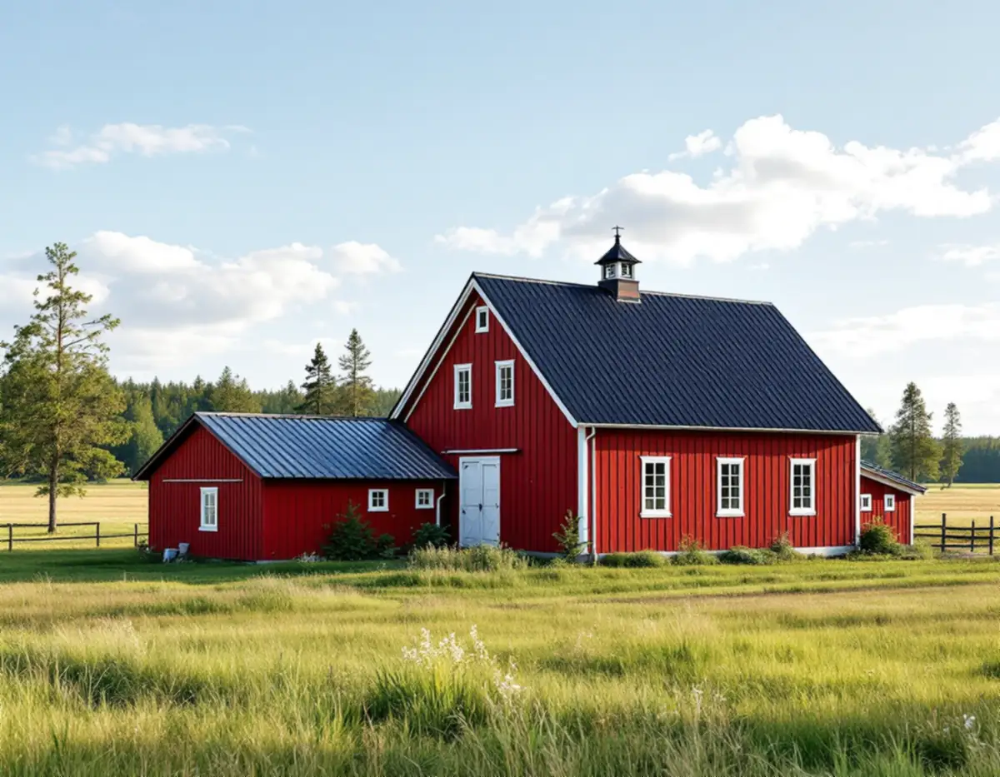
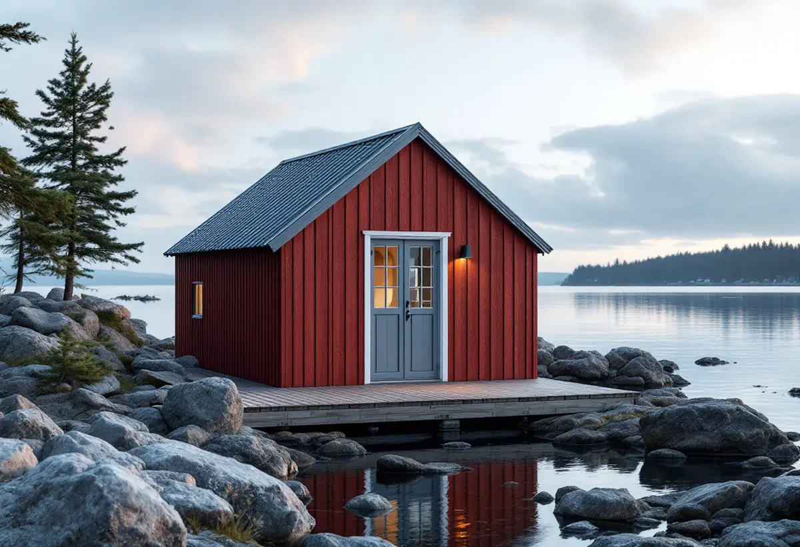

Besök på gården eller tomten
Vi tittar på huvudbyggnad, uthus och sjöbod och noterar vilka plåttyper som finns.
Haninge rymmer stationsnära samhällen, slottsmiljöer och en skärgård med gårdar, fiskebodar och sommarnöjen. Plåten på husen följer samma variation, från falsade tak på gårdarnas huvudbyggnader till enkla korrugerade skivor på sjöbodarna. Geal Entreprenad AB har egna plåtslagare som arbetar i Handen, Västerhaninge, Tungelsta, Dalarö och övriga Haninge, med gratis platsbesök och skriftligt kostnadsförslag.

Kommunens dokument Haninges karaktärsmiljöer, framtaget av WSP 2019 och uppdaterat 2020, är en del av kulturmiljöprogrammet och ska stödja bygglov och förvaltning. Om landsbygden skriver det att de äldsta byggnaderna har timmerstomme och tak som vanligen täcktes med torv, brädor eller vass, material som senare ersattes av tegel.
I råden för ny bebyggelse på landsbygden beskrivs sadeltaket som den vanligaste takformen. Tegel är ett vanligt material på huvudbyggnaden, och som annat material att föredra nämns falsad plåt. På förråd och sjöbodar anges trapetskorrugerad plåt som ett alternativ.
Råden gäller nya hus, men de säger mycket om vad som passar på de gamla. När en gård har haft falsad plåt på taket lägger vi gärna ny plåt med samma bandbredd och kulör, så att taket fortsätter att se ut som det har gjort. Mer om tekniken finns under falsat plåttak.

För sjöbodar och båthus ger karaktärsmiljöerna egna råd. Befintliga sjöbodsmiljöer ska bevaras, och nya bodar ska ha en enkel form med sadeltak och gaveln mot vattnet, stående träpanel målad i faluröd slamfärg och vara oisolerade och ouppvärmda. Användningen ska vara förvaring av båtar, båtutrustning och fiskeredskap.
En sjöbod står ofta precis vid stranden och tar emot både regn och vind från vattnet. Det korrugerade plåttaket behöver därför sitta fast ordentligt vid gavlarna och längs takfoten, där vinden får tag. Vi byter gärna enstaka skivor och kompletterar fästdon i stället för att byta hela taket, om resten håller.
Dokumentet skriver också att tegel och senare tillägg med plåtfasader är främmande material på landsbygden. Vi föreslår därför inte plåt som fasadbeklädnad på en sjöbod eller ett uthus, utan håller plåten på taket och i detaljerna.
Ett exempel i dokumentet är Tungelsta gamla skola från 1912, med brutet mansardtak täckt med falsad takplåt. Bland karaktärsdragen för sommarnöjena på Dalarö och Smådalarö, med villor från 1860- till 1920-talet, nämns träpanel, spröjsade fönster, torn och brutna tak.
På ett brutet tak möts två lutningar i en brytlinje, och där är plåten svårast att göra rätt. Övergången måste tas upp av den övre plåten och föras över den undre så att vattnet inte kan tränga in i skarven. Kring tornhuvar, takkupor och skorstenar bockas beslagen för hand. Boverket skriver att tak med många vinklar, kupor och takfönster får fler skarvar och anslutningar, och att det ökar sannolikheten för läckage.
Karaktärsmiljöerna anger att byggnaders ursprungliga arkitektoniska uttryck ska bevaras och vara vägledande vid om- och tillbyggnad i sommarnöjesområdena. Vi mäter därför upp befintliga beslag innan de rivs.
Haninge kommun räknar byte av taktäckningsmaterial, takkupor och solceller till fasadändringarna. Bygglov krävs om fasaden ändras på en byggnad eller i ett område som är särskilt värdefullt. Kommunen anger också att solenergianläggningar kräver lov i ett detaljplanelagt område som ligger inom eller nära ett riksintresse för totalförsvaret, oavsett byggnadstyp.
Ändringar ska enligt kommunen utföras varsamt även när de är lovfria, och karaktärsmiljöerna påpekar att deras råd kan tillämpas på alla sommarnöjesområden i kommunen, även de som inte är utpekade som särskilt värdefulla. Vill du veta mer om taken i kommunen i stort, se takläggare i Haninge.
Vi tittar på huvudbyggnad, uthus och sjöbod och noterar vilka plåttyper som finns.
Vi kontrollerar om området är särskilt värdefullt och om solceller berörs av totalförsvarets riksintresse.
Befintliga beslag, falsar och skivor mäts upp innan något rivs.
Varje byggnad och varje del av arbetet prissätts var för sig.
Ny plåt bockas och monteras, och brytlinjer, kupor och genomföringar görs om noggrant.
Vi visar arbetet och hur plåten ansluter mot de delar som har behållits.
Rotavdrag gäller för att reparera, rengöra eller byta ut plåttak, hängrännor och stuprör på ett småhus som du äger och bor i, också ett fritidshus. Arbete på en fristående sjöbod eller ett uthus på samma tomt bör stämmas av mot Skatteverkets regler innan.
Avdraget är högst 30 procent av arbetskostnaden, högst 50 000 kr per person och år, inom 75 000 kr för rot och rut tillsammans. Geal gör avdraget direkt på fakturan.
Hur många byggnader som ingår, om taken är raka eller brutna, mängden beslag kring kupor och torn, om plåten ska tillverkas efter förlaga och hur lätt det är att nå tomten med material. Efter ett gratis platsbesök får du ett skriftligt kostnadsförslag.
Plåttak, hängrännor och beslag.
Plåtslagare i Stockholm →Takbyte, takbesiktning och plåtarbeten.
Takläggare i Haninge →Dalarö, Vendelsö och Brandbergen.
Takrenovering i Haninge →Vakuumtoalett, sluten tank och öarna.
Badrumsrenovering i Haninge →Nytt hus och tillbyggnad i omvandlingsområden.
Byggföretag i Haninge →Tegelvillor, grupphus och panelade gårdar.
Fasadrenovering i Haninge →Sportstugor och fönster i skärgårdsväder.
Fönsterbyte i Haninge →Egnahem, sportstugor och hus i sluttning.
Golvläggare i Haninge →Egnahem, grupphus och Dalarö.
Köksrenovering i Haninge →Egnahem, grupphus och sommarvillor i Haninge.
Målare i Haninge →Verandor, altaner och skärmtak.
Snickare i Haninge →